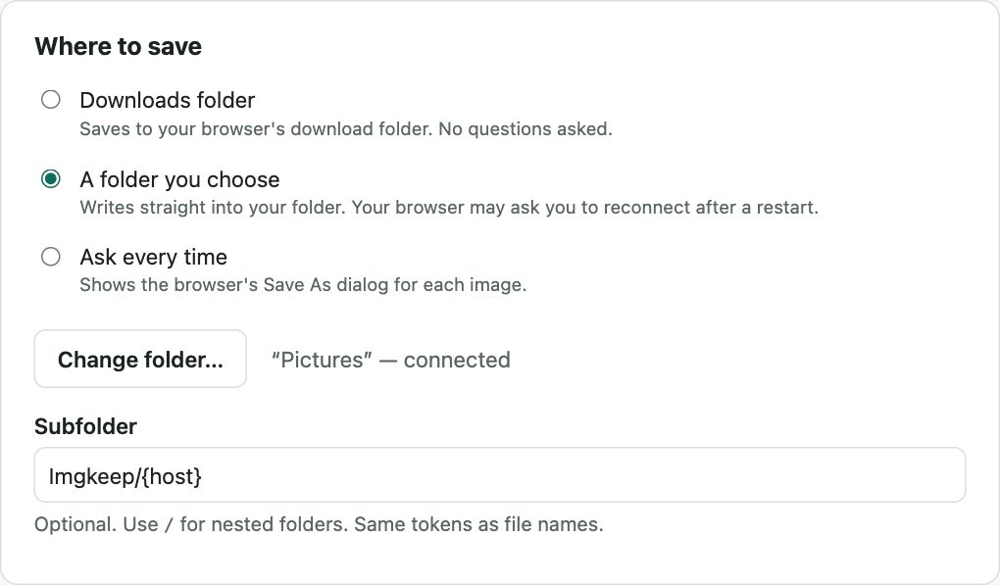

How to save WebP as JPG or PNG in Chrome
Short answer
Right-click the image, choose Imgkeep: Save image as, then PNG or JPG. The WebP is converted on your computer, so nothing is uploaded. Without an extension, save the WebP and re-save it from Paint (File › Save as) or Preview (File › Export). Pick PNG for graphics and transparency, JPG for photos.
Updated
Should I pick JPG or PNG?
- PNG keeps every pixel and any transparent background. Files are bigger. Best for logos, screenshots and graphics.
- JPG is smaller and opens everywhere. Best for photos. It has no transparency, so transparent areas get a solid colour, usually white.
Not sure? Pick PNG. It never loses anything.
How do I save WebP as PNG or JPG in one step?
An extension can convert the image as you save it, straight from the right-click menu. It runs in your browser, so pick one you can trust (how to check an image extension is safe). Here's how it works with ours.
Our extension
Imgkeep
- Add Imgkeep to Chrome from the Chrome Web Store.
- Right-click the image and choose Imgkeep: Save image as.
- Pick PNG or JPG. The file is saved to your Downloads folder.

In Options you can send images to a folder you pick instead, or choose where each time. You can also set the JPG quality, the background colour transparent images get as JPG (white by default), and file names like {name}-{w}x{h}. It never overwrites an existing file. Conversion happens on your computer; nothing is uploaded. Free and open source.

How do I convert WebP without an extension?
Windows: Paint
- Save the image as usual (right-click › Save image as…).
- Right-click the saved file, choose Open with › Paint.
- File › Save as, then JPEG picture or PNG picture.
If the image had a transparent background, check the result: Paint may not keep it.
Mac: Preview
- Save the image, then open it in Preview (on older macOS versions, Preview may not open WebP).
- File › Export, and set Format to JPEG or PNG.
Any computer: copy and paste
Right-click the image, choose Copy image, and paste it into an image editor, then save as JPG or PNG. In Preview, use File › New from Clipboard. It skips the WebP file entirely, but transparency may be lost.
Online converters
They work, but you upload the image to someone else's server. Fine for public pictures; think twice for anything private.
Why won't my converted file open?
Renaming photo.webp to photo.jpg doesn't convert it. It's still WebP inside, and many apps will refuse it. The reverse also happens: a site can send WebP from an address ending in .jpg. Here's why Chrome saves images as WebP.
If you can't save an image at all, it may exist only inside the page (a blob: address). Imgkeep can't save those yet; a screenshot works. On Instagram or Pinterest, where photos sit under another layer, use Imgkeep: Find image here instead (when right-click won't save an image).
Related guides
- Why Chrome saves images as WebP
- How to save AVIF as JPG or PNG
- Chrome saves images as JFIF? How to get JPG
- How to save an animated WebP as a GIF
- How to save an image as a PDF in Chrome
- A safe alternative to Save image as Type
- When right-click won't save an image
- How to get an image from the web into Canva, Figma or Google Slides
Questions
How do I save WebP as PNG without uploading it?
Use a converter that runs on your own computer. An extension like Imgkeep converts the image in your browser as you save it: right-click, Imgkeep: Save image as, PNG. Paint, Preview and copy and paste also work offline. Online converters are the ones that upload your image to their server.
Does converting WebP to JPG lose quality?
PNG keeps the pixels exactly as they are. JPG compresses again, so there's a small loss, usually invisible at high quality settings.
What about animated WebP?
JPG and PNG can't hold animation, so a converted animated WebP becomes a still image of one frame. To keep it moving, save it as GIF instead: in Imgkeep, choose GIF (keeps animation). Step by step: how to save an animated WebP as a GIF.
Can I make Chrome always save JPG?
No. Chrome has no setting for the format of saved images. It saves the file the site sent. The same goes for AVIF: see how to save AVIF as JPG or PNG.